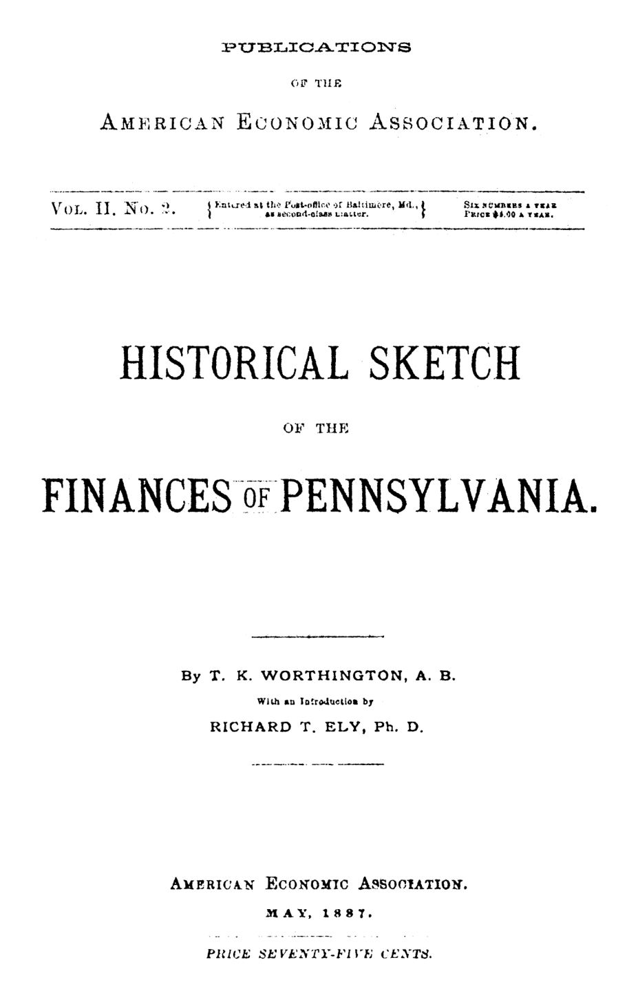

Pensilvânia, 1842: o estado que quis viver de canais, não de impostos
Leitura: 7 min
Sem impostos e com obras financiadas por dívida, a Pensilvânia suspendeu os juros em 1842. Um estudo de 1887 reconstrói o colapso, a venda dos canais e a reconstrução fiscal.


Em 1810, cada habitante da Pensilvânia pagava, em média, 13 centavos de dólar por ano em impostos estaduais. O governo vivia sobretudo dos juros de suas aplicações em ações de bancos, estradas e pontes, e da venda de terras públicas. Até 1826, afora um tributo sobre dividendos bancários, taxas sobre certos cartórios e licenças comerciais, não havia tributação estadual.
Assim começa a história contada por T. K. Worthington no “Historical Sketch of the Finances of Pennsylvania”, publicado em maio de 1887 pela American Economic Association, com introdução de Richard T. Ely. O texto mostra como um estado quase sem impostos chegou à moratória (suspensão do pagamento de juros) e como saiu dela.
Como um estado sem impostos decidiu construir canais?
Os montes Allegheny isolavam o leste do oeste. Em agosto de 1825, uma convenção reuniu em Harrisburg 113 delegados de 46 condados para discutir canais. Os opositores alegaram que o plano exigiria impostos opressivos e beneficiaria as regiões de modo desigual. Perderam por 87 votos a 26. A resolução vencedora dizia que aplicar recursos públicos nas obras não era despesa, mas investimento benéfico. Worthington observa, seco, que ninguém explicou de onde viria o dinheiro: como impostos estavam fora de cogitação, o estado teria de tomar emprestado antes de investir.
Em 1826 vieram a lei do Canal da Pensilvânia e a do Internal Improvement Fund, que pagaria os juros dos empréstimos com pedágios, dividendos e outras receitas. Para o autor, é ali que começa a desonra financeira do estado.
Quanto custaram as obras e quanto renderam?
Até 1835, o estado havia tomado emprestado e gastado US$ 19,3 milhões em obras públicas. Os pedágios do período somaram US$ 1,26 milhão, cerca de US$ 210 mil por ano. Ainda assim, esperava-se que em quinze ou vinte anos as obras quitassem a dívida e sustentassem governo e escolas.
Parte da ilusão era contábil: divulgava-se a arrecadação bruta como se fosse lucro. Em 1840, o governador Porter foi o primeiro a insistir na diferença: em 1838, pedágios e tração não cobriram nem os reparos e o custeio, com um buraco de US$ 378 mil.
Por que a dívida virou dependência?
O resumo das operações do Tesouro entre 1826 e 1844 dá a medida: 58,6% da receita veio de empréstimos e apenas 11,4% de impostos. Do gasto, 76,8% foi para as obras e seus juros.
Durante anos, parte dos juros foi paga com os ágios (prêmio acima do valor de face) obtidos na venda de novos títulos.
A lei de 18 de fevereiro de 1836 deu carta estadual por 40 anos ao antigo Banco dos Estados Unidos, rebatizado United States Bank of Pennsylvania. Em troca, o banco assumia obrigações de US$ 10,2 milhões, entre bônus e empréstimos ao estado; a mesma lei revogou os modestos impostos de 1831. Sumner, citado no texto, viu ali uma troca de favores entre isenção de impostos, obras e banco. A instituição quebrou em 1837, 1839 e 1841, e Worthington a aponta como causa imediata da crise de 1842.
Fazer negócios exclusivamente com capital emprestado é uma especulação de caráter perigoso. (To do business exclusively on borrowed capital is a speculation of a dangerous character)
O que aconteceu quando o dinheiro acabou?
Em 1º de agosto de 1842, o Tesouro estava sem fundos e não conseguiu tomar os US$ 870 mil autorizados. Os credores receberam certificados de juros, títulos a 5% no lugar do dinheiro, expediente repetido em 1843 e 1844. Em Filadélfia, o título estadual de 5%, cotado a 105 em 1836, valia 33 em 1842.
Na Inglaterra, o reverendo Sidney Smith, credor do estado, escreveu ao Congresso: a falta ocorria em plena paz, no estado mais rico da União, que colhia os frutos das estradas e canais feitos com o dinheiro emprestado.
É um ato de má-fé que, consideradas todas as circunstâncias, não tem paralelo nem desculpa. (It is an act of bad faith which (all its circumstances considered) has no parallel and no excuse)
A imprensa americana reagiu com bravata, mas o repúdio puro e simples quase não foi cogitado. A virada veio com a lei de 29 de abril de 1844, que tributou imóveis, bens pessoais, ações, rendas profissionais (exceto as de agricultores) e capital bancário, e vinculou de forma irrevogável toda essa receita aos juros da dívida. Alguns condados recolheram sua cota antes do prazo.
Impostos e licenças, que renderam US$ 439 mil em 1840, chegaram a US$ 2,1 milhões em 1846. Os juros voltaram a ser pagos em 1845 e não foram mais interrompidos. O atraso teve preço: os juros capitalizados acrescentaram US$ 4,45 milhões a uma dívida que chegou a US$ 40,7 milhões.
Como o estado saiu dos negócios e das dívidas?
Em 1844, a linha principal foi oferecida por US$ 20 milhões, e o leilão durou quarenta dias sem um único lance. Em 1857, a Pennsylvania Railroad Company a comprou por US$ 7,5 milhões; em 1858, o restante foi para a Sunbury and Erie por US$ 3,5 milhões. Obras que haviam custado entre 75 e 80 milhões de dólares saíram por US$ 11 milhões, a prazo.
Também em 1857, uma emenda constitucional limitou a US$ 750 mil a dívida para cobrir déficits, obrigou o estado a manter um fundo de amortização e o proibiu de ser acionista de empresas. Para Worthington, ali acabou a política de tomar emprestado em vez de tributar.
Ely, na introdução, relativiza o fracasso. Lembra que o imposto já foi recurso extraordinário e defende que as autoridades públicas assumam monopólios naturais, como ferrovias, em benefício do público; Prússia e Baviera tiravam de atividades lucrativas 66% e 72% de suas receitas. Na Pensilvânia, diz, a ideia era boa e a execução, falha, e os estados se apressaram em vender propriedades valiosas.
A lição mais prática, porém, já estava num relatório de 1840 da comissão de finanças do Legislativo: toda dívida nova deveria nascer com o imposto que a pagaria, porque assim
o coletor de impostos informará continuamente o povo sobre a situação da dívida pública (the tax-gatherer will continually advise the people of the condition of the public debt)
Na minha leitura
Na minha leitura, o documento não condena o investimento público; condena a desconexão entre quem decide o gasto e quem enxerga o custo. A convenção de 1825 chamou dívida de investimento sem dizer quem pagaria a conta; a comissão de 1840 propôs o remédio mais simples e mais difícil. Disciplina, aqui, não é recusar obras: é medir o retorno líquido e explicitar a fonte de pagamento antes de começar.
Há uma segunda lição. A resposta ao trauma foi uma regra constitucional rígida, que o próprio texto julga excessiva por empurrar as grandes obras para corporações privadas. Regras nascidas de crises tendem a corrigir demais. Prefiro instrumentos que tornem o custo visível, como contabilidade honesta, vinculação de receitas e avaliação independente, a proibições que trocam um risco por outro.
Glossário
- Dívida fundada
- Dívida de longo prazo, representada por títulos com prazo e juros definidos, em oposição a empréstimos temporários.
- Ágio sobre empréstimos
- Prêmio pago pelo comprador acima do valor de face de um título; a Pensilvânia chegou a usá-lo para pagar juros.
- Certificados de juros
- Títulos entregues aos credores no lugar dos juros em dinheiro, usados pela Pensilvânia entre 1842 e 1844.
- Fundo de amortização
- Fundo alimentado por receitas vinculadas e destinado exclusivamente a recomprar e extinguir a dívida pública.
- Monopólio natural
- Atividade em que um único operador atende o mercado com menor custo, como ferrovias, canais ou gás encanado.
Fontes
- Historical Sketch of the Finances of Pennsylvania (pp. 7–106). JSTOR · Internet Archive (PDF)
- Sumário da edição no JSTOR: Publications of the American Economic Association, vol. 2, nº 2.
Documento em domínio público (EUA, publicado antes de 1931), via JSTOR Early Journal Content e Internet Archive. Resumo e comentário do autor deste site, sem afiliação com a American Economic Association. Encontrou um erro? Escreva: a correção é publicada no próprio texto, com data.
← Nº 6 · A patologia da cooperação: fazendeiros, operários e mórmons Nº 8 · As ferrovias e a primeira agência reguladora dos EUA →